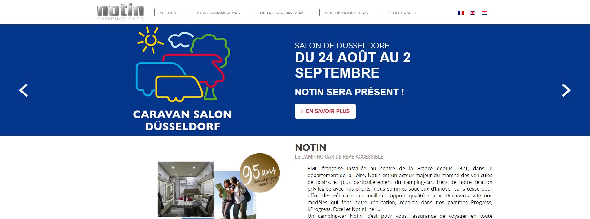
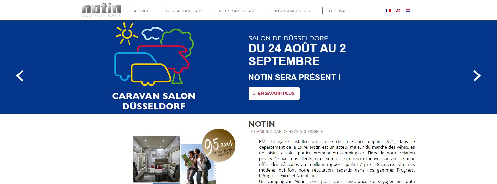

Mes tâches et missions au sein de Webqam
03 août 2018
Dans cet article je vais parler plus particulièrement des tâches que j’ai effectuées lors de ces 6 semaines chez Webqam.
Lors de mon arrivée je n’avais qu’une tâche (comme dit dans cet article parlant de mon
intégration) : celle de la ToDo List ou Kata en Laravel et VueJS. Cette mission avait pour but de me
faire intégrer les bonnes pratiques pour être opérationnel sur des projets impliquants des clients. En effet,
ce projet n’avait aucun but précis à proprement parlé, si ce n'est de m'aider à m'améliorer et progresser.
J’avais une liste de tâches assez précises à faire, que Sébastien Noirie, le directeur technique, contrôlait
par une revue de code. Il y avait souvent des choses à corriger comme je travaillais avec des technologies
(Laravel et VueJS) que ne je connaissais pas. Cependant j’ai beaucoup appris car j'applique maintenant ces
pratiques à tous mes projets.
D'autres tâches m’ont été également confiées, je travaillais donc sur plusieurs choses en même temps. On
m’a demandé de régler un bug de couleur (qui n'affichait pas) sur le site internet de Webqam ; de faire des
mises à jour sur des sites Wordpress (voir ci-dessous), ou encore de regarder une vidéo de deux heures concernant
le Règlement Général sur la Protection des Données (RGPD), formation obligatoire pour tous les employés de
Webqam.
Comme je disais précédemment, la majorité de mon stage a été de m’occuper de sites Wordpress. J’ai dû faire
les mises à jour Wordpress d’une dizaine de sites à cause de failles de sécurité trouvées par les clients.
Au début je ne savais pas exactement comment faire, j’ai donc appris sur le tas et posé des questions aux
autres développeurs ou ceux qui se sont occupés du développement du site. Par la suite, j'étais de plus en
plus rapide pour effectuer les mises à jour puisqu’il y avait également le temps de récupération du projet
sur mon ordinateur pour pouvoir effectuer les tests en local et en préproduction. Si le client était satisfait
et s’il n’y avait aucun bug, alors je passais les changements en production.
Une des autres tâches que j’avais à remplir sur des sites Wordpress, était des changements et modifications,
par exemple, ajouter des logos, changer ou ajouter des blocs de produits, ajouts de liens, changements de
couleurs. De même que les mises à jour, toutes les modifications devaient passer en préproduction pour que
le chef de projet vérifie le travail. Le client pouvait ensuite se rendre sur la préproduction pour voir
les changements et les approuver.
Ci-dessous, des exemples de sites sur lesquels j'ai travaillé. Pour le premier, j'ai effectué les mises
à jour et ajouter la page "mentions légales". Pour le second, CKFD, j'ai encore une fois fait les mises à
jour de Wordpress. J'ai également rajouté un bloc à deux endroits différents pour que le client puisse y
insérer une nouvelle référence. Sur le dernier site, j'ai simplement effectué les mises à jour Wordpress
pour éviter les failles de sécurité.
 

En plus des tâches précédentes, j’ai effectué la documentation sur la borne photo de Webqam vers la fin
de mon stage. Cette mission était assez différente de tout ce que j’ai pu faire d'autant plus ce n’était
pas du développement. Pour avoir plus de précisions sur cette expérience assez atypique, je vous invite à
aller voir cet
article.
Pour conclure cet article, j’ai eu des tâches à effectuer assez variées dans l’ensemble, de plus j’ai pu
progresser sur des technologies telles que Laravel, VueJS ou encore le CMS Wordpress. J’ai également
fait quelque chose que je n’avais jamais fait auparavant, à savoir une documentation complète sur un
logiciel. Globalement j'ai réussi à mener à bien les tâches qui m’ont été confiées.